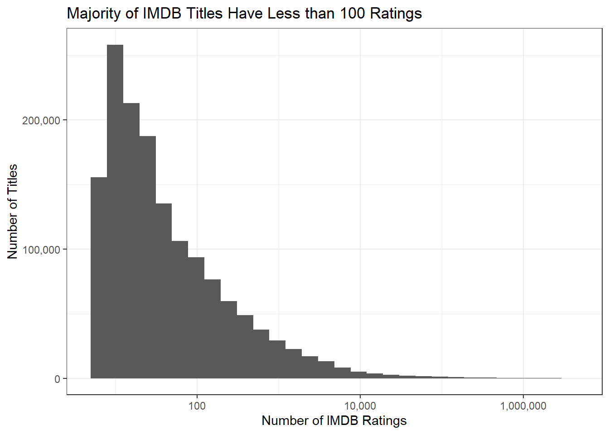
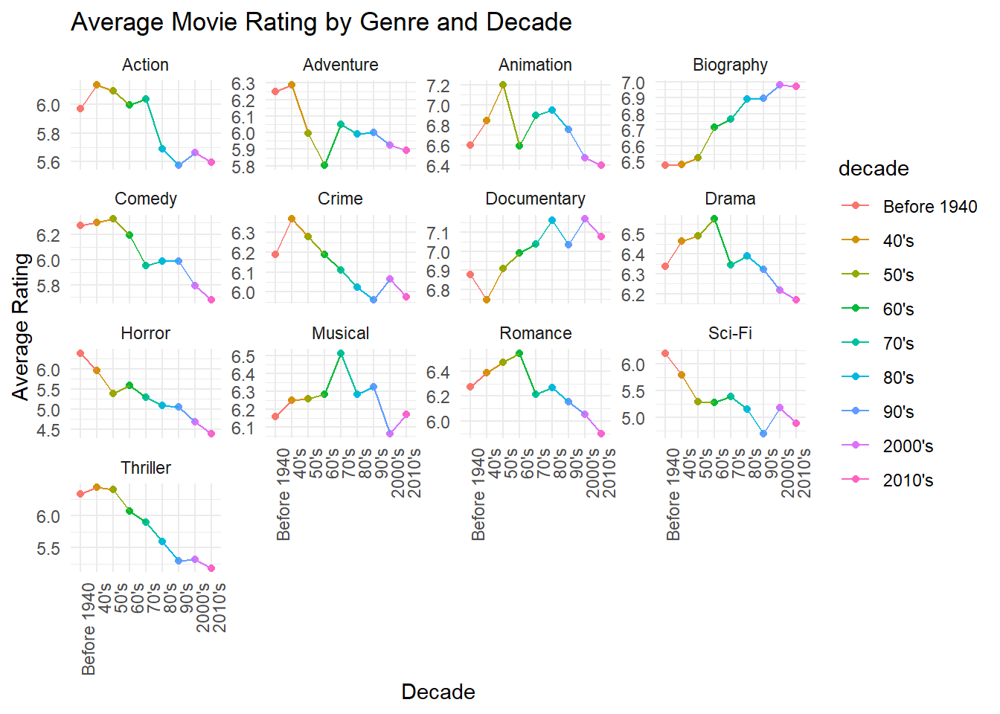
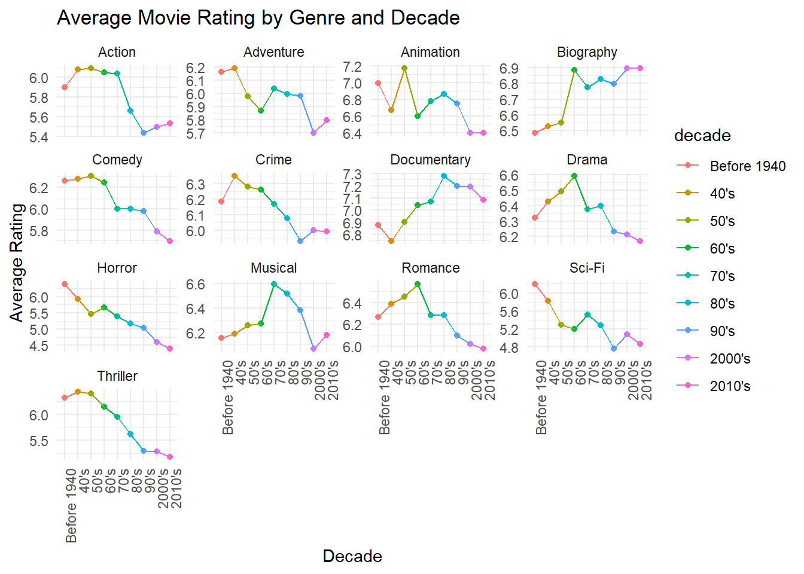
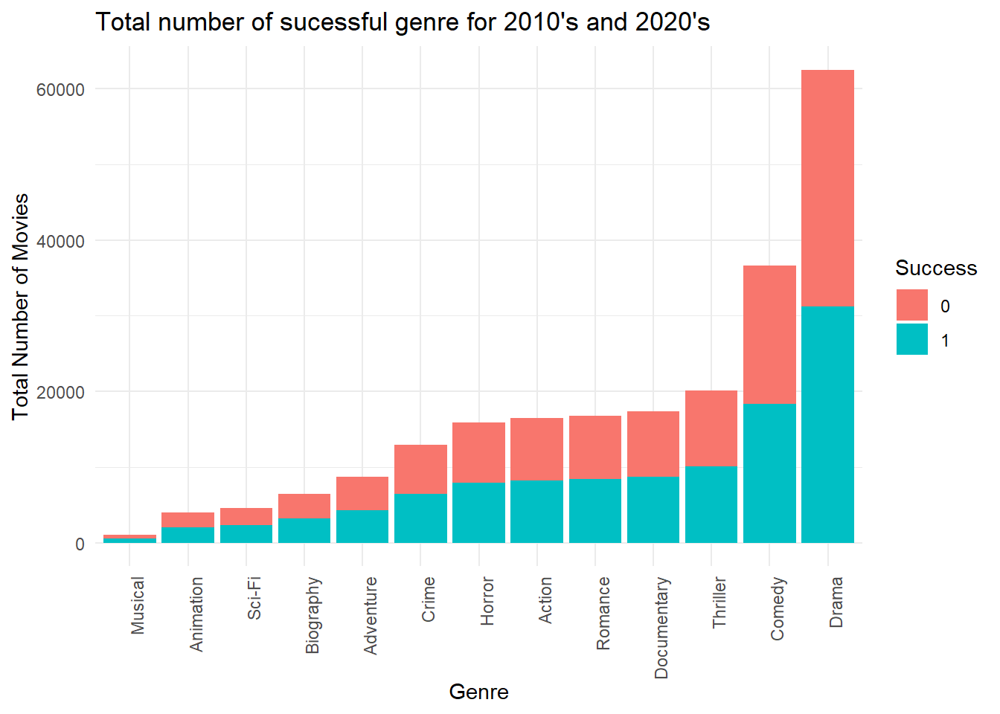
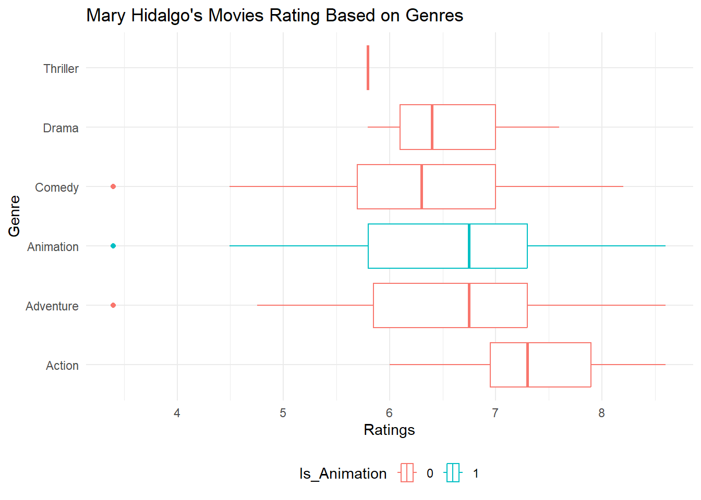

Code
if(!require("ggplot2")) install.packages("ggplot2")
if (!require("tidyverse")) install.packages("tidyverse")
if (!require("DT")) install.packages("DT")
library(tidyverse)
library(DT)
library(ggplot2)Hollywood has often used familiar strategies to attract audiences, like making movies based on real-life stories, adapting books or games, or working with popular intellectual properties. However, in recent years, movie theaters have seen fewer big box office hits, and audiences aren’t flocking to see the latest films as they used to.
This project aims to find new movie ideas by analyzing data from the IMDb non-commercial release. By looking at what made past movies successful, identifying top actors and directors,popular genres.. we hope to give Hollywood executives useful insights for creating movies that can draw audiences back to theaters.
The following packages are used for this analysis: dplyr, tidyr, DT, ggplot2 and tidyverse,gganimate , scales. If these packages have not been installed in the system, they can be with the following code:
To begin, we load the necessary R libraries, primarily using the tidyverse package for data wrangling and DT for data visualization.
if(!require("ggplot2")) install.packages("ggplot2")
if (!require("tidyverse")) install.packages("tidyverse")
if (!require("DT")) install.packages("DT")
library(tidyverse)
library(DT)
library(ggplot2)I have also created a function for interactive table creation
get_imdb_file <- function(fname){
BASE_URL <- "https://datasets.imdbws.com/"
fname_ext <- paste0(fname, ".tsv.gz")
if(!file.exists(fname_ext)){
FILE_URL <- paste0(BASE_URL, fname_ext)
download.file(FILE_URL,
destfile = fname_ext)
}
as.data.frame(readr::read_tsv(fname_ext, lazy=FALSE))
}NAME_BASICS <- get_imdb_file("name.basics")
#write.csv(NAME_BASICS, "~/STA9750-2024-FALL/NAME_BASICS.csv",row.names=TRUE,col.names = TRUE )TITLE_BASICS<- get_imdb_file("title.basics")
#write.csv(TITLE_BASICS, "~/STA9750-2024-FALL/TITLE_BASICS.csv",row.names=TRUE,col.names = TRUE )TITLE_EPISODES <- get_imdb_file("title.episode")
write.csv(TITLE_EPISODES, "~/STA9750-2024-FALL/TITLE_EPISODES.csv",row.names=TRUE,col.names = TRUE )TITLE_RATINGS <- get_imdb_file("title.ratings")TITLE_CREW <- get_imdb_file("title.crew")TITLE_PRINCIPALS <- get_imdb_file("title.principals")For our NAME_BASICS table, we’ll restrict our attention to people with at least two “known for” credits.
glimpse(NAME_BASICS)Rows: 3,180,842
Columns: 7
$ X <int> 1, 2, 3, 4, 5, 6, 7, 8, 9, 10, 11, 12, 13, 14, 15, 1…
$ nconst <chr> "nm0000001", "nm0000002", "nm0000003", "nm0000004", …
$ primaryName <chr> "Fred Astaire", "Lauren Bacall", "Brigitte Bardot", …
$ birthYear <int> 1899, 1924, 1934, 1949, 1918, 1915, 1899, 1924, 1925…
$ deathYear <int> 1987, 2014, NA, 1982, 2007, 1982, 1957, 2004, 1984, …
$ primaryProfession <chr> "actor,miscellaneous,producer", "actress,soundtrack,…
$ knownForTitles <chr> "tt0072308,tt0050419,tt0053137,tt0027125", "tt003738…TITLE_RATINGS |>
ggplot(aes(x=numVotes)) +
geom_histogram(bins=30) +
xlab("Number of IMDB Ratings") +
ylab("Number of Titles") +
ggtitle("Majority of IMDB Titles Have Less than 100 Ratings") +
theme_bw() +
scale_x_log10(label=scales::comma) +
scale_y_continuous(label=scales::comma)
TITLE_RATINGS <- TITLE_RATINGS |>
filter(numVotes >= 100)glimpse(NAME_BASICS)Rows: 3,180,842
Columns: 7
$ X <int> 1, 2, 3, 4, 5, 6, 7, 8, 9, 10, 11, 12, 13, 14, 15, 1…
$ nconst <chr> "nm0000001", "nm0000002", "nm0000003", "nm0000004", …
$ primaryName <chr> "Fred Astaire", "Lauren Bacall", "Brigitte Bardot", …
$ birthYear <int> 1899, 1924, 1934, 1949, 1918, 1915, 1899, 1924, 1925…
$ deathYear <int> 1987, 2014, NA, 1982, 2007, 1982, 1957, 2004, 1984, …
$ primaryProfession <chr> "actor,miscellaneous,producer", "actress,soundtrack,…
$ knownForTitles <chr> "tt0072308,tt0050419,tt0053137,tt0027125", "tt003738…glimpse(TITLE_BASICS)Rows: 837,371
Columns: 11
$ X <int> 1, 2, 3, 4, 5, 6, 7, 8, 9, 10, 11, 12, 13, 14, 15, 16, …
$ tconst <chr> "tt0000001", "tt0000001", "tt0000002", "tt0000002", "tt…
$ titleType <chr> "short", "short", "short", "short", "short", "short", "…
$ primaryTitle <chr> "Carmencita", "Carmencita", "Le clown et ses chiens", "…
$ originalTitle <chr> "Carmencita", "Carmencita", "Le clown et ses chiens", "…
$ isAdult <int> 0, 0, 0, 0, 0, 0, 0, 0, 0, 0, 0, 0, 0, 0, 0, 0, 0, 0, 0…
$ startYear <int> 1894, 1894, 1892, 1892, 1892, 1892, 1892, 1892, 1892, 1…
$ endYear <chr> "\\N", "\\N", "\\N", "\\N", "\\N", "\\N", "\\N", "\\N",…
$ runtimeMinutes <chr> "1", "1", "5", "5", "5", "5", "5", "12", "12", "1", "1"…
$ genres <chr> "Documentary", "Short", "Animation", "Short", "Animatio…
$ genre_cleaned <chr> "Documentary", "Others", "Animation", "Others", "Animat…TITLE_BASICS <- TITLE_BASICS |>
semi_join(TITLE_RATINGS,
join_by(tconst == tconst))
TITLE_CREW <- TITLE_CREW |>
semi_join(TITLE_RATINGS,
join_by(tconst == tconst))
TITLE_EPISODES_1 <- TITLE_EPISODES |>
semi_join(TITLE_RATINGS,
join_by(tconst == tconst))
TITLE_EPISODES_2 <- TITLE_EPISODES |>
semi_join(TITLE_RATINGS,
join_by(parentTconst == tconst))
TITLE_EPISODES <- bind_rows(TITLE_EPISODES_1,
TITLE_EPISODES_2) |>
distinct()
TITLE_PRINCIPALS1 <- TITLE_PRINCIPALS1 |> semi_join(TITLE_RATINGS, join_by(tconst == tconst))Correct the column types of the TITLE tables using a combination of mutate and the coercion functions as.numeric and as.logical..
TITLE_BASICS <- TITLE_BASICS |>
mutate(startYear = as.numeric(startYear))
TITLE_BASICS<-TITLE_BASICS |> separate_longer_delim(genres, ",")
glimpse(TITLE_BASICS)Rows: 837,371
Columns: 11
$ X <int> 1, 2, 3, 4, 5, 6, 7, 8, 9, 10, 11, 12, 13, 14, 15, 16, …
$ tconst <chr> "tt0000001", "tt0000001", "tt0000002", "tt0000002", "tt…
$ titleType <chr> "short", "short", "short", "short", "short", "short", "…
$ primaryTitle <chr> "Carmencita", "Carmencita", "Le clown et ses chiens", "…
$ originalTitle <chr> "Carmencita", "Carmencita", "Le clown et ses chiens", "…
$ isAdult <int> 0, 0, 0, 0, 0, 0, 0, 0, 0, 0, 0, 0, 0, 0, 0, 0, 0, 0, 0…
$ startYear <dbl> 1894, 1894, 1892, 1892, 1892, 1892, 1892, 1892, 1892, 1…
$ endYear <chr> "\\N", "\\N", "\\N", "\\N", "\\N", "\\N", "\\N", "\\N",…
$ runtimeMinutes <chr> "1", "1", "5", "5", "5", "5", "5", "12", "12", "1", "1"…
$ genres <chr> "Documentary", "Short", "Animation", "Short", "Animatio…
$ genre_cleaned <chr> "Documentary", "Others", "Animation", "Others", "Animat…relevant_genres <- c("Action", "Comedy", "Drama", "Horror", "Romance", "Thriller", "Adventure", "Animation", "Biography", "Crime", "Documentary","Musical","Romance","Sci-Fi")
TITLE_BASICS <- TITLE_BASICS |>
mutate(genre_cleaned = case_when(
genres %in% relevant_genres ~ genres,
TRUE ~ "Others" # Assign "Others" to all non-relevant genres
))NAME_BASICS <- NAME_BASICS |>
mutate(birthYear = as.numeric(birthYear),
deathYear = as.numeric(deathYear))
glimpse(NAME_BASICS)Rows: 3,180,842
Columns: 7
$ X <int> 1, 2, 3, 4, 5, 6, 7, 8, 9, 10, 11, 12, 13, 14, 15, 1…
$ nconst <chr> "nm0000001", "nm0000002", "nm0000003", "nm0000004", …
$ primaryName <chr> "Fred Astaire", "Lauren Bacall", "Brigitte Bardot", …
$ birthYear <dbl> 1899, 1924, 1934, 1949, 1918, 1915, 1899, 1924, 1925…
$ deathYear <dbl> 1987, 2014, NA, 1982, 2007, 1982, 1957, 2004, 1984, …
$ primaryProfession <chr> "actor,miscellaneous,producer", "actress,soundtrack,…
$ knownForTitles <chr> "tt0072308,tt0050419,tt0053137,tt0027125", "tt003738…TITLE_CREW<-TITLE_CREW |> separate_longer_delim(directors, ",")
glimpse(TITLE_CREW)Rows: 550,846
Columns: 4
$ X <int> 1, 2, 3, 4, 5, 6, 7, 8, 9, 10, 11, 12, 13, 14, 15, 16, 17, 1…
$ tconst <chr> "tt0000001", "tt0000002", "tt0000003", "tt0000004", "tt00000…
$ directors <chr> "nm0005690", "nm0721526", "nm0721526", "nm0721526", "nm00056…
$ writers <chr> "\\N", "\\N", "\\N", "\\N", "\\N", "\\N", "\\N", "\\N", "\\N…glimpse(TITLE_EPISODES)Rows: 3,012,210
Columns: 5
$ X <int> 1, 2, 3, 4, 5, 6, 7, 8, 9, 10, 11, 12, 13, 14, 15, 16, 1…
$ tconst <chr> "tt0045960", "tt0046855", "tt0048378", "tt0048562", "tt0…
$ parentTconst <chr> "tt0044284", "tt0046643", "tt0047702", "tt0047768", "tt0…
$ seasonNumber <int> 2, 1, 1, 1, 1, 1, 1, 1, 1, 3, 3, 1, 8, 1, 10, 6, 2, 8, 4…
$ episodeNumber <int> 3, 4, 6, 10, 4, 20, 5, 2, 20, 6, 2, 3, 2, 10, 17, 5, 1, …TITLE_EPISODES<-TITLE_EPISODES|>mutate(
seasonNumber=as.numeric(seasonNumber),
episodeNumber=as.numeric(episodeNumber))glimpse(TITLE_PRINCIPALS1)Rows: 6,598,225
Columns: 7
$ X <int> 1, 2, 3, 4, 5, 6, 7, 8, 9, 10, 11, 12, 13, 14, 15, 16, 17, …
$ tconst <chr> "tt0000001", "tt0000001", "tt0000001", "tt0000001", "tt0000…
$ ordering <int> 1, 2, 3, 4, 1, 2, 1, 2, 3, 4, 5, 1, 2, 1, 2, 3, 1, 2, 3, 4,…
$ nconst <chr> "nm1588970", "nm0005690", "nm0005690", "nm0374658", "nm0721…
$ category <chr> "self", "director", "producer", "cinematographer", "directo…
$ job <chr> "\\N", "\\N", "producer", "director of photography", "\\N",…
$ characters <chr> "[\"Self\"]", "\\N", "\\N", "\\N", "\\N", "\\N", "\\N", "\\…glimpse(TITLE_RATINGS)Rows: 372,896
Columns: 4
$ X <int> 1, 2, 3, 4, 5, 6, 7, 8, 9, 10, 11, 12, 13, 14, 15, 16, 1…
$ tconst <chr> "tt0000001", "tt0000002", "tt0000003", "tt0000004", "tt0…
$ averageRating <dbl> 5.7, 5.6, 6.5, 5.4, 6.2, 5.0, 5.4, 5.4, 5.4, 6.8, 5.2, 7…
$ numVotes <int> 2088, 282, 2095, 183, 2831, 195, 888, 2235, 213, 7705, 3…1.How many movies are in our data set? How many TV series? How many TV episodes?
table(TITLE_BASICS$titleType)
movie short tvEpisode tvMiniSeries tvMovie tvSeries
266029 39986 394516 12413 29156 60368
tvShort tvSpecial video videoGame
1052 4388 17491 11972 I write a functioncount_title to identify the project type and count.
[1] "There are 295185 movies, 72781 series and 394516 episodes in the TITLE_BASICS dataset."2.Who is the oldest living person in our data set?
According to wikipedia, the oldest person alive in the world is of 1908 onwards. Hence, I keep checked for people who are born on 1908 and afterwards, and who doesn’t a death year
There are 111 individuals who were born in the year 1911.
3.There is one TV Episode in this data set with a perfect 10/10 rating and 200,000 IMDb ratings. What is it? What series does it belong to?
library(DT)
perfect_episode<-TITLE_RATINGS|>filter(averageRating==10.0,numVotes>=200000)
perfect_episode<-perfect_episode|> left_join(TITLE_EPISODES,by=c('tconst'='tconst'))
perfect_episode<-perfect_episode|>left_join(TITLE_BASICS,by=c('tconst'='tconst'))
table_creation(perfect_episode|>
select(originalTitle,titleType,seasonNumber,episodeNumber,averageRating,numVotes)|>distinct())The perfect rated TV episode is “Ozymandias” which is the 14th Episode in Season 5 of Breaking Bad TV Series.
4.What four projects is the actor Mark Hamill most known for? I wrote a function
find_projectswhich takesactor_or_directorname as a parameter and returns all the projects they have been part of.
I began by joining the TITLE_RATINGS and TITLE_EPISODES datasets to create TITLE_BASICS_RATING_1 and TITLE_BASICS_RATING_2, using the tconst (title constants) as the key. This ensured that all relevant title ratings and episode information were combined.
Next, I merged these two datasets into TITLE_RATING_EPISODE, arranged it by descending averageRating and numVotes, and removed duplicate entries to get a clean dataset for further analysis.
library(tidyverse)
TITLE_BASICS_RATING_1<-full_join(TITLE_RATINGS,TITLE_EPISODES|>select(tconst),by=c("tconst" = "tconst"))
TITLE_BASICS_RATING_2<-full_join(TITLE_RATINGS,TITLE_EPISODES|>select(parentTconst)|>rename(tconst=parentTconst),by=c("tconst" = "tconst"))
TITLE_RATING_EPISODE<-bind_rows(TITLE_BASICS_RATING_1,TITLE_BASICS_RATING_2)
TITLE_RATING_EPISODE<-TITLE_RATING_EPISODE|>
arrange(desc(averageRating),desc(numVotes))|>distinct()
rm(TITLE_BASICS_RATING_1)
rm(TITLE_BASICS_RATING_2)
sample_n(TITLE_RATING_EPISODE,100)|>DT::datatable()I created the dataset ALL_TITLES by merging title information (such as primaryTitle, titleType, and startYear) with the TITLE_RATING_EPISODE. I filtered out any entries categorized under the genre “Others” to focus on specific genres.
I gathered crew information by combining TITLE_CREW (containing director data) and TITLE_PRINCIPALS1 (with principal actor information) to create ALL_CREW, which included both directors and actors. To link this data with individual crew members, I merged the ALL_CREW dataset with the NAME_BASICS dataset, which includes actors and directors known projects and names.
#|code-summary: "Show the code"
TITLE_RATINGS_CREW_1<-ALL_TITLES|>select(tconst)|>full_join(TITLE_CREW|>select(tconst,directors),by=c("tconst"="tconst"))|>distinct()
TITLE_RATING_CREW_2<-ALL_TITLES|>select(tconst)|>full_join(TITLE_PRINCIPALS1|>select(tconst,nconst),by=c("tconst"="tconst"))|>distinct()
ALL_CREW=bind_rows(TITLE_RATINGS_CREW_1|>rename(nconst=directors),TITLE_RATING_CREW_2)
rm(TITLE_RATINGS_CREW_1,TITLE_RATING_CREW_2)
sample_n(ALL_CREW,100)|> DT::datatable()I developed a function called find_projects that takes the name of an actor or director as input (in this case, “Mark Hamill”). The function filters the combined dataset (ALL_CREW) to find all projects associated with the specified person, including those in the knownForTitles column. The function then searches for these titles in the ALL_TITLES dataset to return the relevant projects.
#|code-summary: "Show the code"
find_projects<-function(actor_or_director){
titles_1<-ALL_CREW |>
filter(str_detect(primaryName, actor_or_director))|>
select(nconst,knownForTitles,tconst)
titles_1<-titles_1|>separate_longer_delim(knownForTitles, ",")
titles<-vctrs::vec_c(titles_1$tconst|>unique(),titles_1$knownForTitles|>unique())|>unique()
found_projects<-ALL_TITLES|>filter(tconst %in% titles)
return(found_projects)
}Based on the above analysis and functions, we find that Mark Hamill is famously known for the following four film/TV Series projects, which are Star Wars movies, The Batman Animated movies,Scooby Doo Animated Series and Avatar:The Last Airbender animated series. Mark Hamill is prestigious to be included in these film projects as they are highly rated and loved by the fans, especially Star Wars movies, The Last Airbender Animated Series and the Batman Animated movies.
5.What TV series, with more than 12 episodes, has the highest average rating?
SERIES<-right_join(ALL_TITLES,TITLE_EPISODES|>filter(episodeNumber>12)|>distinct(parentTconst,.keep_all = TRUE)|>select(-tconst),by=c("tconst"="parentTconst")) primaryTitle averageRating numVotes
1 Breaking Bad 9.5 2211754
2 Friends 8.9 1109937
3 The Walking Dead 8.1 1106790
4 The Big Bang Theory 8.1 885395
5 How I Met Your Mother 8.3 741692
6 The Office 9.0 738180
7 Better Call Saul 9.0 679646
8 Lost 8.3 612694
9 Vikings 8.5 598444
10 Prison Break 8.3 595806As seen from the above table, Breaking Bad ranks the first among the top ten TV series, that has the highest number of votes and rated well by the critics. It deserves to be rated as the highest because of the thrilling intensity, it gives the viewers as well as the way they show each of the character development and growth through each of the episode and season.
Design a ‘success’ measure for IMDb entries, reflecting both quality and broad popular awareness. Implement your success metric using a mutate operator to add a new column to the TITLE_RATINGS table.
I created a new variable new_rating with Smoothing Formula: The new rating is calculated using a simple form of Bayesian average to account for the uncertainty in ratings with a low number of votes. The formula used is:
\[ new-rating=(averageRating×numVotes+1)/(numVotes+2) \]
\[ new-rating= (numVotes+2)(averageRating×numVotes+1) \]
The term averageRating * numVotes gives the total sum of the ratings. Adding 1 to the numerator is a form of smoothing to slightly increase ratings with low votes. Dividing by numVotes + 2 accounts for the additional “pseudo-votes” introduced by the smoothing factor.
1.Choose the top 5-10 movies on your metric and confirm that they were indeed box office successes.
I used the function identify_title to filter movies
highest_top_50 function was developed to identify and retrieve the top 50 movies based on the number of votes and ratings. This function takes a dataframe as input, arranges the data in descending order by numVotes and new_rating, and returns the top 50 entries while excluding the columns averageRating, tconst, and titleType from the output. Next, the dataset movies_rated was generated by using the identify_title function to filter movie titles from the ALL_TITLES dataset, ensuring only distinct rows were included, and removing the genre_cleaned column. The highest_top_50 function was then applied to this dataset, and the result was passed to the table_creation function, which produced an interactive table using the DT package to display the top 50 movies based on votes and ratings.
2.Choose 3-5 movies with large numbers of IMDb votes that score poorly on your success metric and confirm that they are indeed of low quality.
To identify movies with a large number of IMDb votes but poor performance on the success metric, I sorted the movies_rated dataset by descending order of numVotes and filtered for movies with a new_rating of less than 5. The following code selects the top 10 movies fitting this criterion and excludes the columns tconst and titleType:
3.Choose a prestige actor or director and confirm that they have many projects with high scores on your success metric.
library(dplyr)
# Function to get user input and find their projects
#name <- readline(prompt = "Enter the actor or director name:")
# Assuming `find_projects()` is a function that takes a name and returns a data frame of projects
name="Tom Hanks"
projects1<-find_projects(name)
# Select relevant columns
projects1|>select(primaryTitle,new_rating,numVotes)|>distinct()|>
arrange(desc(new_rating),desc(numVotes))|>DT::datatable()#|code-summary: "Show the code"
library(dplyr)
library(ggplot2)
projects1 |>
filter(new_rating > median(averageRating)) |>
group_by(genre_cleaned)|>
summarize(count = n(), .groups = "drop")|>
ggplot(aes(x = reorder(genre_cleaned, count), y = count, fill = genre_cleaned)) +
geom_bar(stat = "identity") +
labs(
x = "Genre",
y = "Number of Movies per Genre",
fill = "Genre"
) +
scale_fill_manual("Genres",values = c("Documentary" = "#1f77b4", "Comedy" = "#ff7f0e",
"Horror" = "#2ca02c", "Action" = "#d62728",
"Adventure" = "#9467bd", "Crime" = "#8c564b",
"Animation" = "#e377c2", "Drama" = "#7f7f7f",
"Romance" = "#bcbd22", "Sci-Fi" = "#17becf",
"Thriller" = "#1ae4e2", "Biography" = "#377eb8",
"Musical" = "#4daf4a"))+
ggtitle("Tom Hank's Successful Projects \n Rating > Median(Rating)") +
theme(
legend.position = "bottom",
axis.text.x = element_blank(),
plot.title = element_text(hjust = 0.5) # centers the title
)
4.Perform at least one other form of ‘spot check’ validation.
5.Come up with a numerical threshold for a project to be a ‘success’; that is, determine a value such that movies above are all “solid” or better.
The Genres column has multiple values, hence cleaning it a bit.
summary(ALL_TITLES$numVotes) Min. 1st Qu. Median Mean 3rd Qu. Max.
100 178 380 4918 1189 2945751 The data appeared right-skewed, indicating that most movies had relatively low vote counts while a few received a significantly higher number of votes.
To better analyze the data, I arranged the ALL_TITLES dataset by both numVotes and new_rating. I then divided the dataset into four quantiles based on the numVotes using the ntile function. This categorization allows for better comparison among movies with varying vote counts.
I created a density plot using ggplot2 to visualize the distribution of new_rating across the different vote quantiles. This visual representation helps identify how ratings are distributed in relation to the number of votes, offering insight into which movies are considered “solid” based on their vote counts.
ggplot(ALL_TITLES, aes(x = new_rating, fill = factor(vote_quantile))) +
geom_density(alpha = 0.6) +
labs(title = "Density of Ratings by Vote Quantile",
x = "Rating",
fill = "Vote Quantile") +
theme_minimal()
I defined a success metric in the dataset by creating a new column, success_metrics. Movies are assigned a value of 1 if they fall into thehighest vote quantile (quantile 4) and have a new_rating greater than the median new_rating. Otherwise, they are assigned a value of 0. This approach helps categorize movies as “successful” or “not successful” based on a combination of their rating and the number of votes they received.
###Examining Success by Genre and Decade
1.What was the genre with the most “successes” in each decade?
I filtered the ALL_TITLES dataset to create a new dataset called success_projects, containing only the titles marked as successful (where success_metrics equals 1). This dataset was then prepared for further analysis. I also ensured the startYear column was numeric for accurate processing and examined a sample of successful projects.
success_projects=ALL_TITLES|>filter(success_metrics==1)|>
mutate(startYear = as.numeric(startYear))
sample_n(success_projects,100)|>DT::datatable()summary(success_projects$startYear) Min. 1st Qu. Median Mean 3rd Qu. Max.
1878 2003 2013 2008 2018 2024 After summarizing the startYear, I removed any duplicate entries and filtered out projects with the genre “Others” to focus on distinct genres. A new column, decade, was created based on the startYear. This column categorizes the years into decades, allowing for easier analysis of trends over time.
success_decade<-success_projects|>identify_title("movie")|>select(startYear,primaryTitle,genre_cleaned)|>
arrange(startYear)|>
distinct()|>
filter(genre_cleaned!="Others")
success_decade <- success_decade |>
mutate(decade = case_when(
startYear < 1940 ~ "Before 1940",
startYear >= 1940 & startYear < 1950 ~ "40's",
startYear >= 1950 & startYear < 1960 ~ "50's",
startYear >= 1960 & startYear < 1970 ~ "60's",
startYear >= 1970 & startYear < 1980 ~ "70's",
startYear >= 1980 & startYear < 1990 ~ "80's",
startYear >= 1990 & startYear < 2000 ~ "90's",
startYear >= 2000 & startYear < 2010 ~ "2000's",
startYear >= 2010 & startYear < 2020 ~ "2010's",
startYear >= 2020 & startYear < 2030 ~ "2020's",
TRUE ~ "N/A"
))|>mutate(decade = factor(decade, levels = c("Before 1940", "40's", "50's", "60's",
"70's", "80's", "90's", "2000's",
"2010's", "2020's", "N/A")))The resulting cleaned dataset, success_decade, now contains distinct entries of successful movies with their corresponding start years and genres categorized by decade.
success_decade |>
group_by(decade, genre_cleaned) |>
summarize(genre_count = n(), .groups = "drop") |>
ungroup() |>
ggplot(aes(x = reorder(genre_cleaned,genre_count), y =genre_count, fill = genre_cleaned)) +
geom_bar(stat = "identity", position = "dodge") + # Use bars for better visualization
facet_wrap(~decade, scales = "free_y") +
# Facet by decade to see trends
scale_fill_manual("Genres",values = c("Documentary" = "#1f77b4", "Comedy" = "#ff7f0e",
"Horror" = "#2ca02c", "Action" = "#d62728",
"Adventure" = "#9467bd", "Crime" = "#8c564b",
"Animation" = "#e377c2", "Drama" = "#7f7f7f",
"Romance" = "#bcbd22", "Sci-Fi" = "#17becf",
"Thriller" = "#1ae4e2", "Biography" = "#377eb8",
"Musical" = "#4daf4a"))+ # # Use a color-blind-friendly palette
labs(title = "Number of Movies by Genre Across Decades",
y = "Number of Movies",
x = "Decade") +
theme_minimal() +
theme(axis.text.x = element_text(angle = 90, hjust = 1,size = 6))
success_decade |>
group_by(decade, genre_cleaned) |>
summarize(genre_count = n(), .groups = "drop") |>
ungroup()|>group_by(decade) |>
slice_max(genre_count, n = 1)# A tibble: 10 × 3
# Groups: decade [10]
decade genre_cleaned genre_count
<fct> <chr> <int>
1 Before 1940 Drama 230
2 40's Drama 238
3 50's Drama 348
4 60's Drama 461
5 70's Drama 457
6 80's Drama 516
7 90's Drama 742
8 2000's Drama 1163
9 2010's Drama 1508
10 2020's Drama 663It is Drama category is been the most successes in all decades.
2.What genre consistently has the most “successes”? What genre used to reliably produced “successes” and has fallen out of favor?
To analyze the trends in movie genres over time regarding their success, we can examine the average ratings by genre for each decade. This will help us identify which genre has consistently had the most successes and which genre has fallen out of favor over the years.
ALL_TITLES <- ALL_TITLES|> mutate(decade = case_when(
startYear < 1940 ~ "Before 1940",
startYear >= 1940 & startYear < 1950 ~ "40's",
startYear >= 1950 & startYear < 1960 ~ "50's",
startYear >= 1960 & startYear < 1970 ~ "60's",
startYear >= 1970 & startYear < 1980 ~ "70's",
startYear >= 1980 & startYear < 1990 ~ "80's",
startYear >= 1990 & startYear < 2000 ~ "90's",
startYear >= 2000 & startYear < 2010 ~ "2000's",
startYear >= 2010 & startYear < 2020 ~ "2010's",
startYear >= 2020 & startYear < 2030 ~ "2020's",
TRUE ~ "unknown"
)) |>
mutate(decade = factor(decade, levels = c("Before 1940", "40's", "50's", "60's",
"70's", "80's", "90's", "2000's",
"2010's", "2020's")))
ALL_MOVIES<-ALL_TITLES|>
identify_title("movie")|>
select(startYear,decade,primaryTitle,genre_cleaned)|>
arrange(startYear)|>
distinct()|>
filter(genre_cleaned!="Others")|>
left_join(ALL_TITLES|>
select(startYear,primaryTitle,genre_cleaned,new_rating,success_metrics,numVotes),
by=c("startYear"="startYear",
"primaryTitle"="primaryTitle","genre_cleaned"="genre_cleaned"))I then created a new dataset, ALL_MOVIES, which consists of movie titles along with their respective genres, start years, and ratings.
I calculated the average rating for each genre per decade and filtered out the 2020s to focus on earlier trends. This summary provides insight into how each genre performed over the decades.
# Calculate average rating per genre per decade
ALL_MOVIES |>
group_by(genre_cleaned, decade) |>
summarise(Average_Rating = median(new_rating))|>ungroup()|>filter(decade!=c("2020's"))|>na.omit()|>
ggplot( aes(x = decade, y = Average_Rating, color = decade)) +
geom_point() +
geom_line(aes(group = genre_cleaned))+
facet_wrap(~genre_cleaned, scales = "free_y") + # Facet by genre
labs(title = "Average Movie Rating by Genre and Decade",
x = "Decade",
y = "Average Rating") +
theme_minimal() +
theme(axis.text.x = element_text(angle = 90, hjust = 1))
Documentry,Biography and Animation genres consistently produce movies with higher average ratings, typically above 6.5./ On the other hand, Sci-fi,Horror,Thriller present higher risks in terms of audience reception and ratings.These genres were particularly popular in the 1940s and 1950s, a time when they captivated audiences with imaginative storytelling and thrilling experiences. However, over the decades, the landscape of cinema has evolved, and audiences’ tastes have shifted./
Throughout the decades, Drama has emerged as a dominant genre, enjoying sustained popularity across various eras. However, recent trends indicate that the audience’s appetite for dramatic storytelling may be waning.
3.What genre has produced the most “successes” since 2010? Does it have the highest success rate or does it only have a large number of successes because there are many productions in that genre?
The analysis reveals the total number of successes for each genre within the specified time frame. By grouping the data by genre_cleaned and success_metrics, we determined how many projects in each genre were classified as successful (success_metrics = 1) compared to non-successful (success_metrics = 0).
# Load necessary library for text annotations
library(scales)
# Calculate percentages within each genre for success_metrics
x<-ALL_MOVIES |>
filter(decade %in% c("2010's", "2020's")) |>
group_by(genre_cleaned, success_metrics) |>
summarise(count = n())|>
mutate(total = sum(count), # Total per genre
percentage = round((count / total) * 100,2)) |>ungroup()
x|>DT::datatable()# Create the plot
ggplot(x, aes(x = reorder(genre_cleaned,total), y=total,fill=as.factor(success_metrics))) +
geom_bar(stat = "identity", position = "stack") + # Bars are dodged side-by-side for success_metrics
# Add percentage labels on top of bars
labs(title = "Total number of sucessful genre for 2010's and 2020's",
x = "Genre",
y = "Total Number of Movies",
fill = "Success") +
theme_minimal() +
theme(axis.text.x = element_text( hjust = 1,angle=90))
At a glance, the analysis indicates that the Drama genre has produced the most successful projects since 2010, followed closely by Comedy and Thriller. However, when we examine the success rate by considering the ratio of successful projects to the total number of projects within each genre, the results shift significantly.
# Create the plot
ggplot(x|>filter(success_metrics==1), aes(x = reorder(genre_cleaned,percentage), y=percentage,fill=genre_cleaned)) +
geom_bar(stat = "identity", position = "dodge") + # Bars are dodged side-by-side for success_metrics
geom_text(aes(label = paste0(round(percentage, 1), "%")),
position = position_dodge(width = 0.2), vjust = -0.1) + # Add percentage labels on top of bars
labs(title = "Percentage of sucessful genre for 2010's and 2020's",
x = "Genre",
y = "Percentage of successful movies(%)",
fill = "Genre") +
theme_minimal() +
scale_fill_manual("Genres",values = c("Romance" = "#1f77b4", "Comedy" = "#ff7f0e",
"Horror" = "#2ca02c", "Action" = "#d62728",
"Adventure" = "#9467bd", "Crime" = "#8c564b",
"Animation" = "#e377c2", "Drama" = "#7f7f7f",
"Documentary" = "#bcbd22", "Sci-Fi" = "#17becf",
"Thriller" = "#1ae4e2", "Biography" = "#377eb8",
"Musical" = "#4daf4a"))+
theme(axis.text.x =element_blank())+
theme(legend.position = "bottom")
Biography, Animation, and Documentary genres emerge as the leaders in terms of success metrics when we look at the proportion of successful films. The disparity between the total number of successful projects in Drama, Comedy, and Thriller versus the success rates in Biography, Animation, and Documentary indicates that while traditional genres like Drama may produce a higher volume of successful films, newer or less conventional genres are achieving a greater proportion of success relative to their output. This suggests that these genres are not only producing fewer films but are also prioritizing quality and engagement, leading to better ratings and audience reception.
4.What genre has become more popular in recent years?
if (!require("gganimate")) install.packages("gganimate")
library(gganimate)
if (!require("scales")) install.packages("scales")
library(scales)
if (!require("zoo")) install.packages("zoo")
library(zoo)years <- seq(from = 1950, to = 2020, by = 1)
years_df <- data.frame(startYear = years)
ALL_MOVIES<-ALL_MOVIES|>mutate(startYear=as.numeric(startYear))
ALL_MOVIES_1 <- full_join(ALL_MOVIES|>filter(startYear>1950), years_df, by = "startYear")|>
replace_na(list(column_name = 0)) ALL_MOVIES_1$startYear <- na.approx(ALL_MOVIES_1$startYear)
anim <- ALL_MOVIES_1 |>
filter(startYear > 1950) |>
ggplot(aes(x= new_rating, y= numVotes, color = genre_cleaned)) +
geom_point() +
scale_y_log10(labels = scales::comma) + # Log scale for y-axis
scale_x_log10(labels = scales::comma) + # Log scale for x-axis
guides(color = "none", size = "none") + # Remove legends for color and size
theme_bw() + # Use a clean white background theme
facet_wrap(~genre_cleaned) + # Facet by genre_cleaned
ylab("Number of Votes") +
xlab("Ratings") +
transition_time(startYear) + # Animate by rounded years
ggtitle("NumVotes Vs Ratings by Year in {round(frame_time,0)}") +
labs(caption = "Data from the IMDB DataSet")
animate(anim, renderer = gifski_renderer(file = paste0(output_dir, "/animation1.gif")))
From this graph, we could identify that Dramas,Comedy,Action,Adventure, Crime have been always popular. However, there is a good amount attention being given for Biography and Animations in recent years.
Based on my findings I have decided to combine Biography Genre and Animation.
We focus on the Biography genre to identify high-quality films. The process begins by filtering the ALL_TITLES dataset to select only movies categorized under the Biography genre. The distinct function is used to ensure that each movie is represented only once in the resulting dataset.
bio_anime_movies<-ALL_TITLES|>identify_title("movie")|>filter( genre_cleaned%in% c("Biography","Animation"))|>distinct()
bio_anime_movies <- bio_anime_movies |>filter(vote_quantile>3)|>select(-averageRating,-startYear)|>
left_join(ALL_CREW |> filter(!is.na(primaryName)), by = c("tconst" = "tconst")) |>
distinct()
sample_n(bio_anime_movies,100)|>DT::datatable()Identify (at least) two actors and one director who you will target as the key talent for your movie. Write a short “pitch” as to why they are likely to be successful. You should support your pitch with at least one graphic and one table.
# A tibble: 41,171 × 2
primaryName count
<chr> <int>
1 Mary Hidalgo 45
2 Megumi Hayashibara 44
3 Takeshi Seyama 37
4 Leslee Feldman 36
5 Ikue Ôtani 35
6 Avy Kaufman 33
7 Ruth Lambert 32
8 Kappei Yamaguchi 31
9 Mary Vernieu 31
10 Minami Takayama 30
# ℹ 41,161 more rowsfind_projects("Mary Hidalgo")|>identify_title("movie")|> mutate(is_animation = ifelse(genre_cleaned %in% c("Animation","Biography"), 1, 0))|>select(new_rating,numVotes,is_animation,genre_cleaned)|>
ggplot(aes(x = new_rating, y = genre_cleaned, color = as.factor(is_animation))) +
geom_boxplot() + # Adjust shape for filled points
labs(
title = "Mary Hidalgo's Movies Rating Based on Genres",
x = "Ratings",
y = "Genre",
color = "Is_Animation"
) +
theme_minimal() +
theme(legend.position = "bottom")
She has a lot of box office hits.
Now I am trying to find actor for my movie.
#| label: 'Biography Movies Actor'
#| eval: true
#| message: false
#| warning: false
#| cache: false
#| code-fold: true
#|code-summary: "Show the code"
bio_anime_movies<-bio_anime_movies|>left_join(TITLE_PRINCIPALS1|>select(nconst,category)|>filter(!is.na(category)),by=c("nconst"="nconst"))|>distinct()
bio_anime_movies|>group_by(primaryName,category)|>
summarize(count=n(),.groups="drop")|>arrange(desc(count))|>filter(category %in% c("actor","director","actress"))|>
slice(1:100)|>DT::datatable()
#write.csv(bio_anime_movies, "~/STA9750-2024-FALL/bio_anime_movies.csv",row.names=TRUE,col.names = TRUE )find_projects("Brian Grazer")|>identify_title("movie")|> mutate(is_biography = ifelse(genre_cleaned == "Biography", 1, 0))|>select(new_rating,numVotes,is_biography,genre_cleaned)|>
ggplot(aes(x = new_rating, y = genre_cleaned,color=as.factor(is_biography))) +
geom_boxplot() + # Adjust shape for filled points
labs(
title = "Brian Grazer's Movies Ratings Based on Genres",
x = "Ratings",
y = "Genre",
color = "Is_Biography"
) +
theme_minimal() +
theme(legend.position = "bottom")
find_projects("Robert") |>
identify_title("movie") |>
mutate(is_biography = ifelse(genre_cleaned == "Biography", "Biography", "Others")) |>
select(startYear, numVotes, new_rating, is_biography) |>
ggplot(aes(x = startYear, y = new_rating, fill = as.factor(is_biography), size = numVotes)) +
geom_point(shape = 21, color = "black") + # Shape 21 allows for point fill with color border
labs(
title = "Brian Grazer's Movies Ratings Yearly based on Genre",
x = "Year",
y = "New Rating",
fill = "Is Biography",
size="Num of Votes"
) +
scale_fill_manual(values = c("Others" = "gray", "Biography" = "blue")) + # Correct color mapping
theme_minimal() +
theme(
legend.position = "bottom",
panel.border = element_rect(color = "black", fill = NA, size = 1) # Add black borders
) +
facet_wrap(~is_biography)
#| label: 'Biography Movies Actoress'
#| eval: true
#| message: false
#| warning: false
#| cache: false
#| code-fold: true
#|code-summary: "Show the code"
bio_anime_movies|>group_by(primaryName,category,decade)|>
summarize(count=n(),.groups="drop",ratings=mean(new_rating))|>arrange(desc(decade),desc(count),desc(ratings))|>filter(category=="actress")|>
#category %in% c("actor","director","actress"))|>
slice(1:30)|>DT::datatable()find_projects("Sobhita Dhulipala") |>
identify_title("movie") |>
mutate(is_biography = ifelse(genre_cleaned == "Biography", "Biography", "Others"))|> select(startYear, numVotes, new_rating, is_biography)|>
ggplot(aes(x = startYear, y = new_rating, fill = as.factor(is_biography), size = numVotes)) +
geom_point(shape = 21, color = "black") + # Shape 21 allows for point fill with color border
labs(
title = "Sobhita Dhulipala's Movies Ratings Yearly based on Genre",
x = "Year",
y = "New Rating",
fill = "Is Biography",
size="Num of Votes"
) +
scale_fill_manual(values = c("Others" = "gray", "Biography" = "blue")) + # Correct color mapping
theme_minimal() +
theme(
legend.position = "bottom",
panel.border = element_rect(color = "black", fill = NA, size = 1) # Add black borders
) +
facet_wrap(~is_biography)